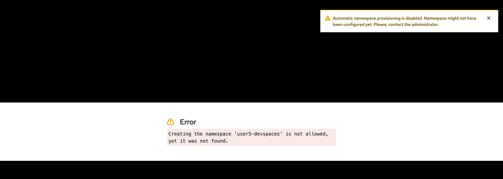

Prevent Namespace Auto Creation
When you log in as a Dev Spaces user and launch the dashboard, a dedicated namespace (OpenShift project) is automatically created for the user. When this user launches a workspace, the resources used by this workspace are all created in this dedicated namespace. Other Dev Spaces users cannot access this namespace.
In some OpenShift installations, there is strict control over who is allowed to create namespaces for security and resource control reasons. Regular users are not allowed to create namespaces. In such scenarios, when users log in, they will not be allowed to access the dashboard since namespace auto-creation has been blocked.
You can turn off automatic namespace creation at the CheCluster CR level and then manually create the namespace using the process approved for your setup (GitOps, manually by a platform administrator etc).
Lab: Disable Dev Spaces Namespace Auto Creation
-
Log in as the
adminuser using theocCLI$ oc login -u admin <OpenShift API URL> -
By default, namespace auto creation is enabled by default
$ oc get checluster/devspaces \ -n openshift-devspaces \ -o jsonpath='{.spec.devEnvironments.defaultNamespace.autoProvision}' true -
Inspect and delete any existing user workspaces. Note that as per the default CheCluster CR, the namespaces are in a specific format (<user>-devspaces), where user is the username.
$ oc get projects | grep "user..devspaces" user1-devspaces Active user2-devspaces Active user5-devspaces Active$ oc delete namespace user1-devspaces user2-devspaces user5-devspaces namespace "user1-devspaces" deleted namespace "user2-devspaces" deleted namespace "user5-devspaces" deleted -
Edit the
devspacesCheCluster CR (usingoc edit checluster/devspaces -n openshift-devspacescommand), and disable automatic namespace creation by the Dev Spaces operator.spec: components: cheServer: debug: false logLevel: INFO dashboard: ... devEnvironments: containerBuildConfiguration: openShiftSecurityContextConstraint: container-build defaultNamespace: autoProvision: false template: <username>-devspacesYou can also use the
oc patchcommand as follows:$ oc patch checluster/devspaces \ -n openshift-devspaces \ --type='merge' -p \ '{"spec":{"devEnvironments":{"defaultNamespace": {"autoProvision": false}}}}' checluster.org.eclipse.che/devspaces patched -
Wait for the Dev Spaces pods to be restarted with the changes. Log out of all active Dev Spaces sessions.
-
Log in as the
user5user and try accessing the Dev Spaces dashboard. You will be denied access, and you will see the following error:Figure 2. Automatic Namespace provisioning disabled -
To fix this error you need to create the namespace for each of the users you want to provide access. The namespace has to be in the format
username-devspacesas defined in the CheCluster CR. You also need to add some extra labels and annotations that are expected by Dev Spaces for proper functioning.$ oc create namespace user5-devspaces namespace/user5-devspaces created$ oc label namespace user5-devspaces \ app.kubernetes.io/part-of=che.eclipse.org \ app.kubernetes.io/component=workspaces-namespace namespace/user5-devspaces labeled $ oc annotate namespace \ user5-devspaces \ che.eclipse.org/username=user5 namespace/user5-devspaces annotated -
Log out and try logging in again as
user5. You should be able to access the Dev Spaces dashboard and launch workspaces. -
Try logging in as a different user and verify that access to the Dev Spaces is denied unless the namespace with labels and annotations is created separately.